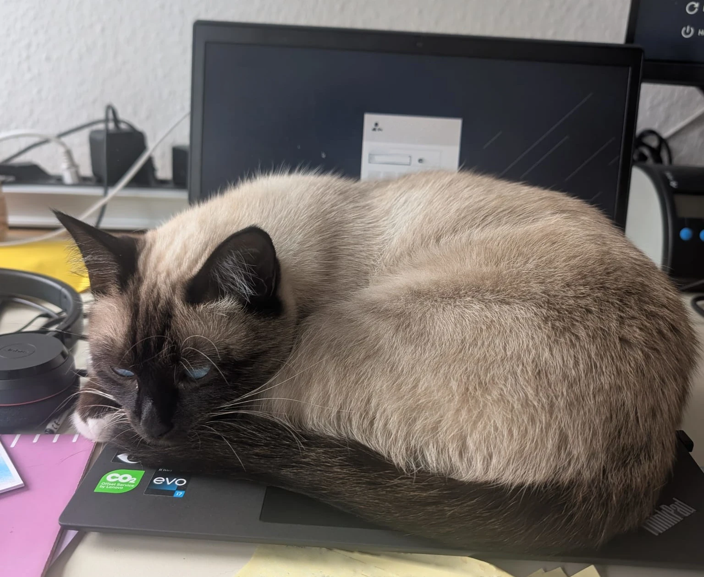
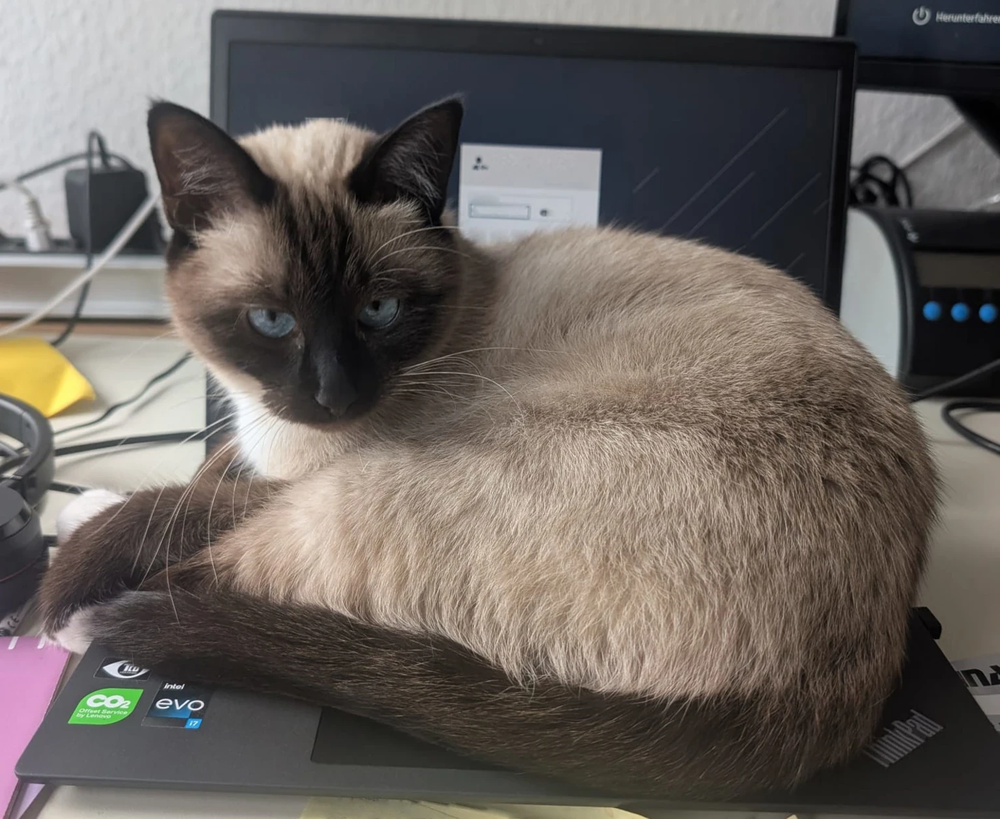

Drag & drop a FIT image here
or click to browse


Drag & drop a FIT image here
or click to browse
model property is changed, proving the DTB can be modified
Use responsibly and only on devices you own.
This tool is provided
“as is” without warranty of any kind, express or implied.
The authors assume no liability for any damages resulting from its use.